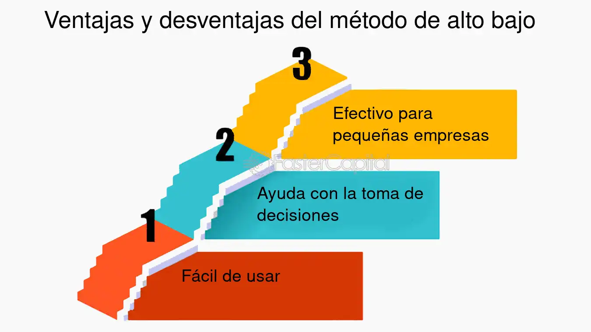

Análisis de Costos
| Período | Nivel de Actividad (Unidades) | Costo Total ($) | Acción |
|---|---|---|---|
Resultados:
Punto Alto: -
Punto Bajo: -
Costo Variable Unitario (b): $0.00
Costo Fijo Total (a): $0.00
Fórmula Costo Total: Y = 0.00 + 0.00X
El método de punto alto - punto bajo es una técnica de segmentación de costos en contabilidad para separar los componentes fijo y variable presentes en los costos mixtos o semivariables.
En resumen: El método de punto alto-punto bajo simplifica la separación de costos mixtos utilizando solo dos puntos de datos, lo que facilita la estimación de la parte fija y la parte variable de los costos.
Fórmulas:
CVU = (Costo Total Punto Alto - Costo Total Punto Bajo) / (Nivel de Actividad Punto Alto - Nivel de Actividad Punto Bajo)
CFT = Costo Total en Punto Alto - (CVU × Nivel de Actividad en Punto Alto)
| Período | Nivel de Actividad (Unidades) | Costo Total ($) | Acción |
|---|---|---|---|
Punto Alto: -
Punto Bajo: -
Costo Variable Unitario (b): $0.00
Costo Fijo Total (a): $0.00
Fórmula Costo Total: Y = 0.00 + 0.00X